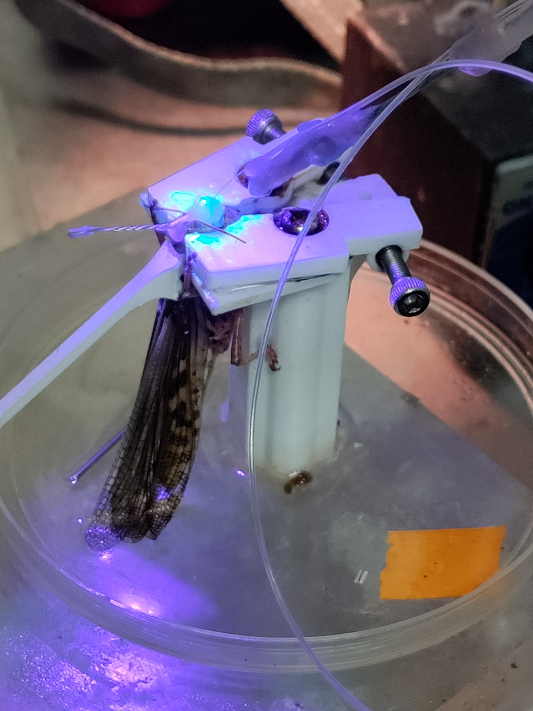
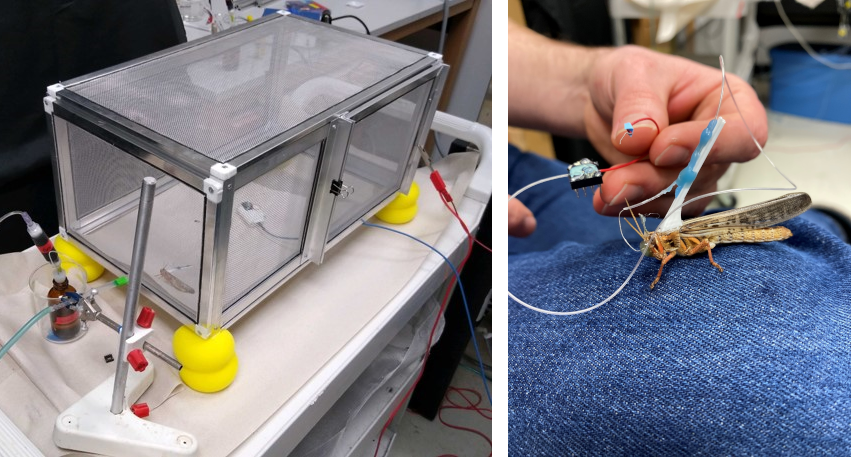
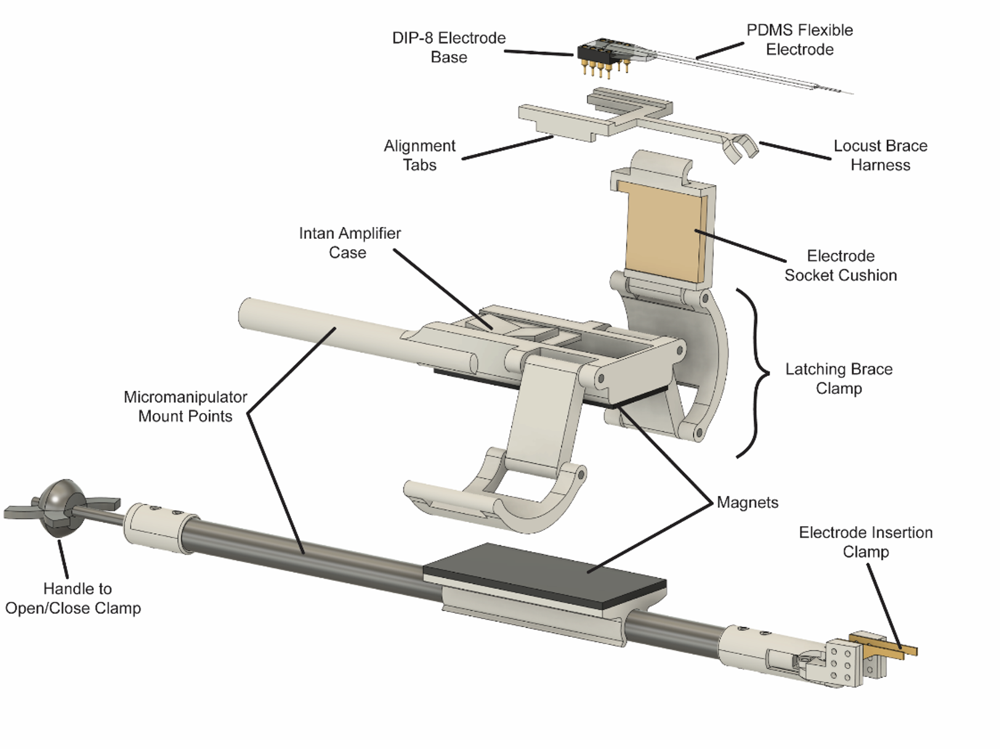
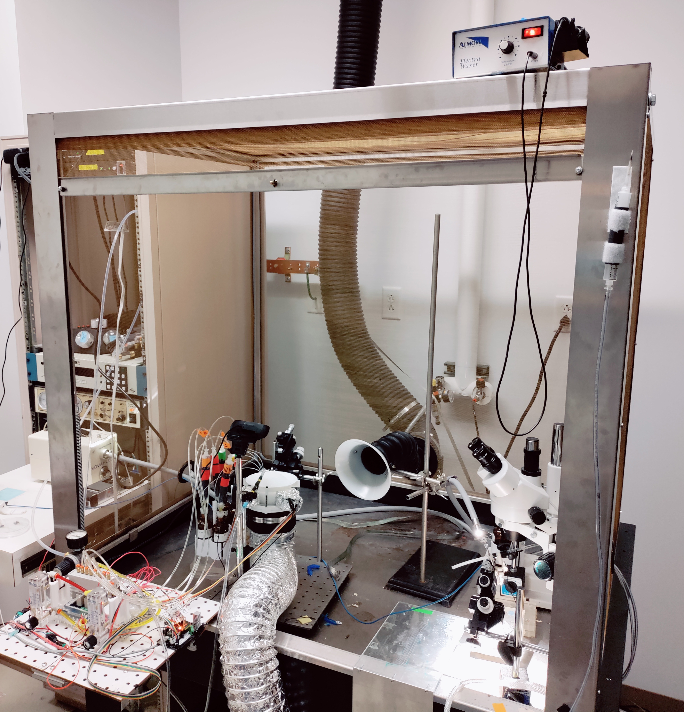
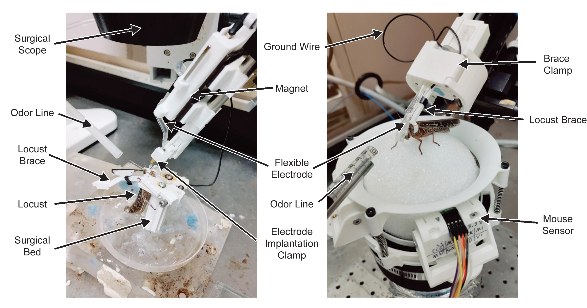
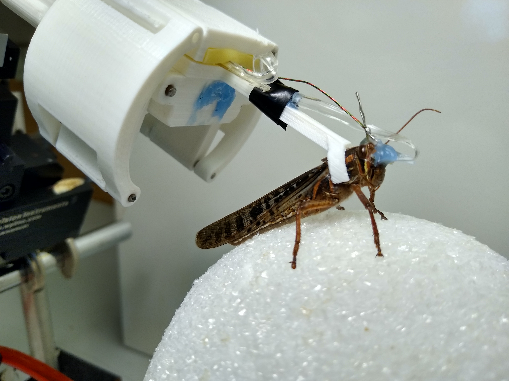

Implant Surgery Tools and Processes
 Background:
Background:
One of the key challenges in using the sensory systems of insects for chemical sensing applications is accessing the neural activity for analysis and decoding. The same challenge limits efforts to record and study neural responses in conjunction with controlled stimuli and recorded behavior to decipher the algorithms used to identify, localize, and respond to chemosensory stimuli. This project was focused on taking a very early version of a modified surgical implantation process, and developing tools and procedures to make it faster, more consistent, and more resilient.
Phase 1: IdeationWe started the project with a new minimally-invasive surgical approach modified from the traditional fully-invasive surgery in the lab (paper). In it, a locust was positioned upright in a modified syringe, with the head capsule waxed to the edges to stabilize it, and the surgery proceeded as normal otherwise. However, this approach had a number of major flaws:
- Once implanted, locusts could not be removed from the syringe without removing the electrode.
- The surgical process was labor intensive, took a long time, and often failed due to damaging sensitive neural tissue or the antennae.
- Implanted electrodes often pulled loose following implantation and during transfer, preventing recording.
Addressing each of these challenges involved the development, testing, and iteration of multiple products and processes. To simplify discussion, the planning, development, and testing and iteration of the products and processes of each point will be addressed separately.
Phases 2-4: Planning, Development, Testing, and IterationI. Making it possible to cleanly remove locusts following surgery.
In order to make it possible to remove locusts following the surgery, it was necessary to develop a different method of stabilizing the head capsule for implantation surgery. To that end I designed a series of surgical beds which would reversibly clamp the locust’s head during surgery, and permitted removal afterwards. While there were variations and small changes within each version, the broad progression of the beds is pictured below, starting with the original approach (left panel).
The first version utilized an angled ramp with a slot for the neck, which would support the head capsule from below. Two sliding plates with concave cutouts clamped the head from the sides, and were locked into place by tightening screws on the sides. The bed could be inclined to permit easier access when placing electrodes or performing some surgical operations. However, the height of the bed made it awkward to perform surgery on, and a wide range of clamping plates had to be used to accommodate varying locust head sizes. Subsequent revisions led to the version shown below (middle panel).
The second version was designed to be shorter, and used a spring-loaded angle adjustment system with locking detents. The head stabilization method was further refined through the use of four locking plates, enabling rapid adjustment for different head sizes and shapes. This was much more practical for implantation operations, and by sliding the plates out the front the locust could be easily removed after implantation. This worked well for stationary recordings and was useable for removal of the locust after surgery, however testing revealed it too had serious shortcomings.
- The plates were prone to jamming due to the sugars and salts in the saline used during surgery. This sometimes made smoothly removing the plates difficult, and risked damaging the preparation.
- The back of the locust faced the surgical bed, preventing attachment of harnesses to hold amplifiers or braces to anchor tethers could not be attached prior to or during the surgery. As a result, they had to be attached after the locust was removed, offering more opportunities for the electrode to be dislodged.
- Locust legs occasionally hooked onto experimenters’ gloves during surgery, disturbing the experimenters and potentially moving the locust at an inopportune time.
To address these issues, the third version (below, right panel) utilized a different clamping system, abandoned the angular adjustments that were rarely used, and redesigned the pillar to provide a suitable surface for locusts to grip. The switch to using two clamping levers instead of sliding plates made the mechanism more robust to contamination by saline, easier to manipulate, and made the back of the locust’s head accessible during surgery. Furthermore, rotating the clamping arrangement so that the back of the locust faces away from the surgical bed support pillar enables harnesses or tether support braces to be attached prior to the surgery, giving the adhesives time to cure and improving the bond.
 II. Accelerating surgical procedures, improving success rate, and improving electrode stability.
II. Accelerating surgical procedures, improving success rate, and improving electrode stability.
Another challenge was the process of the surgical preparation for implantation and sealing the head capsule and stabilizing the electrode following implantation. The general steps for the electrode implantation surgery were to:
- Make an incision and open up a window on the head capsule
- Remove air sacs and fat bodies positioned above the brain
- Elevate and stabilize the brain on a platform mounted to the head capsule
- Remove the outer sheath of the brain over the regions to be recorded
- Insert the electrode, verify neural signals are being recorded and that responses to olfactory stimuli are present
- Seal the head capsule and stabilize the electrode
The first challenge we addressed was the removal of tissue in step 2. Previously done using fine forceps, the use of the forceps was slow, tedious, and could damage the antennal nerve running from the edge of the head capsule to the brain, and was especially slow and challenging when working with limited visibility through the smaller head capsule opening of the minimally invasive surgery.
In collaboration with another graduate researcher we worked to develop an accelerated procedure with a reduced risk of damage.
The primary method we conceived was to develop suction tools and methods to vacuum out the tissue. This approach sought to take advantage of the more granular nature of the air sacs and other tissue compared to the nerves; by using an aperture larger than the nerves, we would ideally be able to vacuum up the more discrete air sacs, while avoiding significant strain on the nerves. Using a modified dental suction tool, we tested a range of pressures, aperture sizes, and materials; ultimately we found a balance that minimized risk of damage to nerves, while dramatically accelerating the surgical process. This approach had the added benefit of removing the hemolymph from the upper head capsule, improving visibility when replaced by the clear saline substitute solution.

The other largest challenge we addressed was the method of sealing the head capsule: The original surgery used melted dental wax to seal the head capsule and stabilize the electrode. Applying this directly to inside of the head capsule has many risks, however, because the high temperature of the wax has the potential to damage sensitive internal tissues such as the antennal nerve. Collaborating with the same researcher and a materials scientist, in testing we found that this can be mitigated by ensuring sufficient saline is present, such that the wax floats on top, and sensitive areas are thermally buffered. However, the saline can also prevent the wax from properly adhering to the head capsule or electrode, causing leaks or mechanical instability.
We subsequently explored a wide range of approaches, including alternative methods of application, use of biocompatible UV-cure epoxy, the use of low-melting-point waxes such as eicosane, and mechanical additions to electrodes, such as “barbs” to prevent slippage. Ultimately we found that a combination of approaches worked best: following electrode implantation, sufficient saline was maintained to just cover the brain, but avoid excessive wetting of the head capsule around the incision. Eicosane was then applied and allowed to form a secure bond, and then used to thermally buffer the interior while a thin layer of Type I soft dental wax was applied to reinforce the connection to the head capsule. Finally, if a saline leak was still present, the leak point could be suctioned dry, and UV epoxy used to seal the leak. Barbs on the electrode were found to be effective at preventing the electrode from slipping out, however they made reuse more challenging, and the use of eicosane for the initial stabilization obviated their use.
 III. Reducing risk of implant damage during transfer from surgery to recording.The final challenge of the surgical process was the transfer of the locust from the surgical bed to the recording apparatus. This was improved by the revisions to the surgical bed to provide access to the back of the locust; this enabled the attachment of a stabilizing brace onto which electrodes would be secured after implantation, reducing strain on the implant site (below, right panel). Testing was performed using tethered locusts, where the locust would be free to explore either a 2-chamber behavioral assay or a custom faraday cage I constructed for testing (below, left panel).
However, the success rate of the transfer was still fairly low, with around half of the transfers dislodging the electrode prior to the experiment. In order to address this problem, I sought to develop tools and processes to streamline the post-implant process and the transfer to the recording rig. This effort was part of the Trackball project team, and development occurred simultaneously on many parts.
The first point where the implanted electrode was often damaged in the process was after implant and stabilization, when the wire used to hold the electrode for insertion was removed. The electrode was generally held in place with Type I dental wax, which in addition to having poor adhesion to new versions of electrodes being tested in lab, was difficult to cleanly separate without applying force to the implanted portion. To address this, I designed a custom clamp capable of being mounted in a micromanipulator, where the clamp jaws could be opened or closed using a knob at the far end from the jaws (see clamp at bottom of figure below). Early versions clamped the electrode perpendicular to its length, however this was found in testing to be challenging to manipulate and prone to slippage, and the jaws were redesigned and shifted to clamp parallel to the electrode. The Intan amplifier and digitizer was mounted to the clamp using magnetic strips, permitting easy removal for transfer to the recording assembly.
The other challenge was the transfer of the locust and electrode to the recording rig. For the trackball, this was optimized by revising the process to have implantation, transfer, and recording take place within a single Faraday cage. The right side of the cage was set up to have a micromanipulator, surgical scope, vacuum, waxer, and single-channel olfactometer for testing neural responses at multiple stages of the implantation. The left side was set up with the Trackball VR system and the 8-channel olfactometer developed for it. The Intan recording system could reach both sides for use during implantation and recording.
Furthermore, I designed the amplifier case to also serve as the mechanical clamp for the locust harness, which holds the locust in place on the trackball. Removable latches on the sides of the case can be inserted, to ready the case for recording. Once the electrode has been implanted (below, left panel), the locust can be removed from the surgical bed, and the harness immediately clamped into the amplifier assembly. The electrode can then be further secured to the locust harness brace, and the reinforced assembly transferred to the trackball for recording (below, right panel).
 Phase 5: Proof of concept and handoverIn combination, the development of new tools and revisions to the surgical process improved the success rate more than threefold. To establish the utility of the new process, a proof-of-concept simultaneous set of recordings was performed using the trackball system (see the Trackball VR project), and handed over to the junior research engineer who had been onboarded during the development process.
